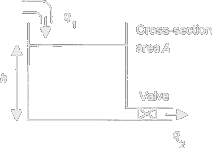

Modeling a Fluidic Tank System and its Electrical Analogy
This lecture explores the process of creating a mathematical model for a common fluidic system—a liquid tank. We will derive its governing differential equation using the principle of conservation of mass and then demonstrate how this system can be powerfully represented by an analogous electrical circuit.
1. The Physical Fluidic System
Consider a tank with vertical walls and a constant cross-sectional area, $A$. The tank has an inflow rate of $q_1$ and an outflow rate of $q_2$ through a valve at the bottom. The height of the liquid in the tank is $h$.

The fundamental principle governing this system is the conservation of mass: the rate of change of the volume of liquid stored in the tank must equal the net flow rate into the tank.
- Rate of change of volume: The volume is $V = A \cdot h$. Therefore, the rate of change is $\frac{dV}{dt} = A \frac{dh}{dt}$.
- Net flow rate: This is the inflow minus the outflow, $q_1(t) - q_2(t)$.
Combining these gives our governing equation: $$ A \frac{dh}{dt} = q_1(t) - q_2(t) $$
The outflow, $q_2$, depends on the pressure at the bottom of the tank, which is proportional to the height $h$. The valve acts as a fluidic resistance, $R_f$, so we can write a relationship similar to Ohm’s Law: $$ q_2(t) = \frac{P_{bottom}}{R_f} = \frac{\rho g h(t)}{R_f} $$ where $\rho$ is the fluid density and $g$ is gravity.
Substituting this into our main equation gives the final first-order differential equation for the system: $$ A \frac{dh}{dt} = q_1(t) - \frac{\rho g}{R_f} h(t) \implies A \frac{dh}{dt} + \left(\frac{\rho g}{R_f}\right) h(t) = q_1(t) $$
We can define a fluidic capacitance as $C_f = A$ (representing the tank’s ability to store volume) and a linearized fluidic resistance as $R_{f,lin} = \frac{R_f}{\rho g}$. The equation becomes: $$ C_f \frac{dh}{dt} + \frac{1}{R_{f,lin}} h(t) = q_1(t) $$
2. The Analogous Electrical System (RLC Circuit)
The behavior of the fluidic system can be perfectly mirrored by an electrical circuit. The complex circuit provided shows components that correspond not only to storage and resistance but also to the fluid’s inertia.

Let’s analyze the electrical analogy based on this circuit. We apply Kirchhoff’s Current Law (KCL) at the central node where the input current $q_1$ splits.
- Flow Rate ($q$) ↔️ Current ($i$): The fluid flow rate is analogous to electrical current.
- Pressure ($P$) or Height ($h$) ↔️ Voltage ($V$): The potential that drives the flow is analogous to voltage.
- Fluidic Capacitance ($C_f$) ↔️ Electrical Capacitance ($C$): The tank’s ability to store fluid volume corresponds to a capacitor’s ability to store charge. The current “into” the tank (i.e., the rate of volume change) is analogous to the current into the capacitor, $i_C = C \frac{dV}{dt}$. In the diagram, this is labeled $q_2$.
- Fluidic Resistance ($R_f$) ↔️ Electrical Resistance ($R$): The valve restricting outflow is a resistor. In a simple model, this resistor would be in parallel with the capacitor.
- Fluidic Inertance ($I_f$) ↔️ Electrical Inductance ($L$): This is a crucial concept. Inductors resist changes in current, just as the inertia of a fluid mass in a pipe resists changes in flow rate. The inductor $L_2$ represents the inertia of the fluid as it fills the main volume of the tank.
Applying KCL to the circuit diagram: $$ q_1(t) = i_{L2}(t) + q_2(t) $$ Where $q_2(t)$ is the current through the capacitor, $i_{L2}$ is the current through the inductor, and the voltage across both parallel elements is $V(t)$.
The governing equations for the components are:
- $q_2(t) = C \frac{dV(t)}{dt}$
- $V(t) = L_2 \frac{di_{L2}(t)}{dt}$
This creates a second-order system, which is more complex than our initial fluidic model. The additional inductor, $L_2$, accounts for the inertial effects of the water, which our simple first-order model ignored. The parallel $R-L_1$ block at the input represents a complex impedance for the inflow, modeling both resistive losses and inertial effects in the inlet pipe.